| Lab Help |  |
Save Help |  |
Print Help |
|
Reactor Laboratory / Reactor Laboratory Toolbar / The Lab Manual / Lab Manual - Background / Lab Manual - Procedures / Lab Manual - Assignments / The Labware Shelf / Lab Equipment (Tool Shelf) / Chemicals Shelf / Chemicals Shelf Icons / Data Window
|
||||
Reactor Laboratory
The Reactor Laboratory is the fully equipped, state-of-the-art online simulated laboratory in which you will perform all of your lab activities.
By default, the Reactor Laboratory opens displaying the Lab Manual for the selected lab. You can open the Lab Manual by clicking at the bottom right corner of the manual.
The Reactor Laboratory includes Glassware, Tools, and Chemical shelves, which contain all the materials that you will need for the selected lab activity.
When you hover over an item in the toolbar or an object on the Labware and Chemicals shelves, the cursor changes from an arrow to a hand and a “tooltip” appears on the screen showing the name or description of that item.
Window Characteristics
The 5 windows are:
Instructions for performing the lab are contained in the Lab Manual. This is the place to begin.
Reactor Laboratory Toolbar
At the top of the Reactor Laboratory is the toolbar. The toolbar displays the name of the current lab activity and contains all the tools for the lab:
The tools include:
| Icon | Name | Description |
| 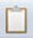 | Report | Displays the lab report, which shows the activity log and answers to assignments. |
| 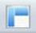 | Data Window | Displays the lab report, which shows the materials and text covered in the lab manual. Data Window Displays data pertaining to the selected item used in the current lab. |
| 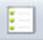 | Lab Constants | Outlines the constants as they are in the REACTOR environment |
| Help | Accesses links to the Help files. | |
| 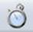 | Timer/td> | Starts a new timer on the Workbench (similar to a stopwatch). You can open and position timers as required. |
| Reset Lab | Restarts the lab activity from the beginning. | |
| 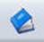 | Lab Manual | Contains all the information necessary to complete the current lab. This material includes the background, procedures, and assignments. |
| Exit Lab | Leaves the current lab and returns to the entry screen. |
Additional Tools include:
The Lab Manual
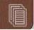The Reactor Laboratory opens displaying the Lab Manual for the selected Lab.
You can open the Lab Manual by clicking at the bottom right corner of the manual cover.
The open Lab Manual will provide you with information about the Background, Procedures and Assignments for the lab.
You should read this information to understand the purpose of the lab.
After you have read the background information, click the Procedures tab and perform the steps to complete the lab.
Lab Manual - Background
When you open the Lab Manual for the first time, information about the lab is displayed in the lab background. You should read this information to understand the purpose of the lab. If the background information is not displayed, click Background located at the bottom of the Lab Manual.
Lab Manual - Procedures
The step by step procedures that you will be performing in the current lab are outlined on the procedures page of the Lab Manual. To display the procedures, click the Procedures tab at the bottom of the Lab Manual.
You can drag the slider on the side of the page to scroll through the steps.
To complete the lab, simply follow the instructions and complete the steps in order.
Lab Manual - Assignments
Assignments are defined for each procedure of the lab. To view assignments:
- Click the Assignments tab on the top of the Lab Manual to view all the assignments for the current lab.
The assignments page will be displayed.
To view the entire assignment again, click the Assignment tab.
To view all of your assignments and the procedure for the lab, click the clipboard icon in the upper part of the screen. This will open the Lab Report.
The Labware Shelf
The Labware shelf contains all of the materials that have been pre-defined as necessary to complete this lab.
The Labware Shelf contains three tabs: the Tools tab, Glassware tab and Chemicals tab.
Click the Glassware tab to display the containers for the selected lab, such as beakers and crucibles.
Click on the Chemicals tab to display all the chemicals needed for this particular lab.
To View Information about a tool:
Point to any tool in the Labware menu and information about that item will be displayed in the Data window.
Using Labware on the Workbench
To use any tool on the workbench:
- Drag the tool to the workbench and release the mouse button when you have placed it in the desired location.
To attach tools to glassware:
- Place the glassware on the workbench.
- Drag a tool from either the shelf or the workbench to the center of the glassware and release the mouse button.
A grouped symbol will appear next to the attached objects.
For example, you can drag a balance to the workbench, and then take a beaker down from the labware shelf and place it on top of the balance. The grouped tools and glassware can be moved as a single unit by dragging the lowest object, for example the balance underneath a beaker.
The grouped tools and glassware can be moved as a single unit by dragging the highest object, for example the beaker on top of a balance.
To Pour or Decant from one container to another.
- Click on the container from which you would like to pour.
- Drag the container so that your cursor appears in the middle of the target container and then release the mouse button.
A dialog box will appear.
- Either click the radio button to decant or pour all, or enter an amount to pour.
- Click the OK button.
The contents will be poured or decanted.
To view explanations of the tools and glassware, see Lab Equipment.
Lab Equipment (Tools Shelf)
The following tools can be found by clicking the Tools tab on the Labware Shelf:
| Icon | Tool | Comments |
| 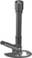 | Bunsen Burner |
Bunsen burner with flame setting of cool, medium, or hot. |
| 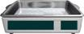 | Constant Temperature Bath |
Generic constant temperature bath, selectable, pre-set temperature units and coolant material. |
| 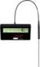 | Thermometer |
|
| 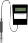 | pH Meter |
Digital pH meter with 0.01 precision. |
| 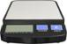 | Balance |
Digital balance with 0.001 g precision. Gram and Milligram selectable. Can be set to Tare to weigh only the contents of a container. |
| 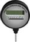 | Pressure Gauge |
Can be set to psi, atm, bar, etc. |
The following glassware can be found by clicking the Glassware tab on the Labware Shelf:
Chemicals Shelf
The Chemicals Shelf contains the chemical compounds and preparations for the current lab. They are displayed on the shelf in the following order: solids, liquids, gases.
The chemicals are represented by the chemical formula and a graphic icon. There are different graphic icons for liquids, solids, indicators, and prepared solutions.
To use a chemical:
- First, make sure that the appropriate glassware is on the workbench.
- Click the chemical and drag it to a container on the workbench.
- Release the mouse button.
- A prompt will appear asking you to enter the amount to be added to the container.
- Enter the amount in mL for liquids and g for solids.
- Click OK.
See Lab Environment for more information about the lab environment and the lab windows.
Chemicals Shelf Icons
The Chemicals Shelf contains the chemical compounds and preparations for the current lab. They are displayed on the shelf in the following order: liquids, solids, gases. Each chemical is represented by an icon and its chemical formula.
| Icon | Name |
| 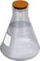 | Liquid |
| 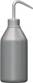 | Water |
| 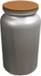 | Solid. Solid Preparation |
| 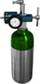 | Gas, Gas Preparation |
| 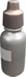 | Indicator |
Data Window
The Data Window displays data pertaining to the selected item used in the current lab.
To view data for any tool or glassware object:
- Make sure the Data Window is open.
- Point and click on any object on the workbench.
- Current information about that object is displayed in the Data Window.